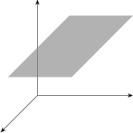

4.2 Multiple Linear Regression Model With Two Independent (Regressor) Variables
When there two independent variables \(X_1\) and \(X_2\) \[Y_i =\beta _0+\beta _1X_{i1}+\beta _2X_{i2}+e_i,\quad i=1,2,\ldots ,n\quad e_i\thicksim ^{iid}N(0,\sigma ^2)\] \[Y=XB+\varepsilon \quad B=\big (\beta _0,\beta _1,\beta _2\big )^t\] \[E\big (Y/X_1,X_2\big )= \beta _0+\beta _1X_1+\beta _2X_2\]

It is assumed that \(Y\) is linearly related to \(X_1\) and \(X_2\).
\(Y=\beta _0+\beta _1X_1+\beta _2X_2\) is a plane in \(3-\) dimension.
\(\beta _0=\) is the \(y-\) intercept of the regression plane.
If the model includes \(X_1=0\) and \(X_2=0\), \(\beta _0\) has particular meaning as a separate term in the regression
model.
\(\beta _1=\) Change in the mean response of \(Y\) per unit (increase) change in \(X_1\) when \(X_2\) is held constant.
\(\beta _2=\) Change in the mean response of \(Y\) per unit increase in \(X_2\) when \(X_1\) is held constant.
\begin {align*} E\big (Y/X_1,X_2\big ) & = \beta _0+\beta _1X_1+\beta _2X_2\\ \frac {\partial }{\partial X_1}E\big (Y/X_1,X_2\big ) & = \beta _1\\ \frac {\partial }{\partial X_2}E\big (Y/X_1,X_2\big ) & = \beta _2\\ \end {align*}
\(Y=XB+\varepsilon \)
\(Y\) and \(\varepsilon \) same as in simple linear regression
\[X= \begin {pmatrix} 1 & X_{11} & X_{12}\\ 1 & X_{21} & X_{22}\\ \vdots & \vdots & \vdots \\ 1 & X_{n1} & X_{n2}\\ \end {pmatrix} \,,\quad B= \begin {pmatrix} \beta _0\\ \beta _1\\ \beta _2\\ \end {pmatrix} \]
Questions on this section
Stuck on something here? Ask below and it stays attached to this topic.